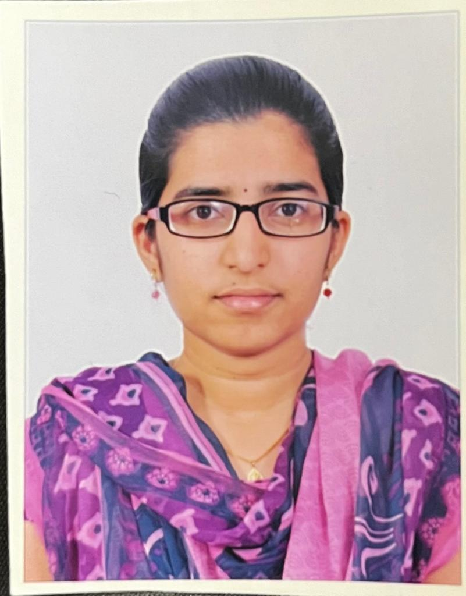

My Favourite Book is The Girl on the Train. It is a 2015 psychological thriller novel by British author Paula Hawkins that gives narratives from three different women about relationship troubles (caused by coercive/controlling men) and, for the main protagonist, alcoholism.
My Favourite Movie is "Bahubali". It is a stunning Indian film with a captivating story, incredible visuals, and memorable characters, making it a cinematic masterpiece. The powerful performances of Prabhas and Rana Daggubati, along with the impressive cinematography and soundtrack, contribute to its enduring popularity.
